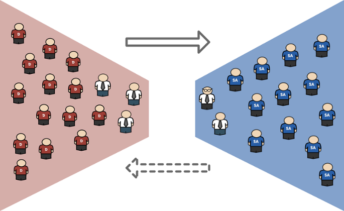
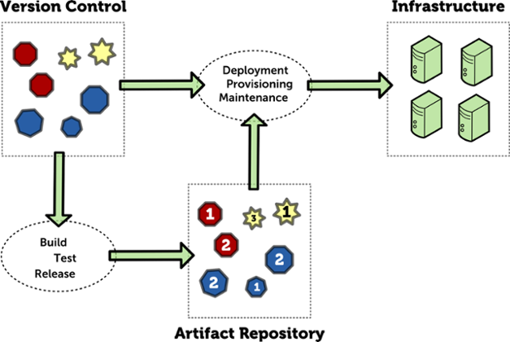

Hi Jack, I got a call from Sandy, the secret project's PM, she says that the DEV servers are not ready yet, I really want you to understand how critical is this project for the organization, please, don't let me down... Francis, VP
Jack's boss
Hi Jack, I understand you have been working on the secret project servers setup recently, don't forget that we need to keep the documentation up-to-date yeah?
No problem! We know how to write docs.
... in the meanwhile ...
The dreaded CR
Hey Jack, we can't deploy anymore to our DEV servers. What the hell is going on?
Fixing
...things get worse...
Worst than down...
UNKNOWN STATE
Chaos (r)
The "secret" project moves into QA
The GO LIVE!
Let's throw more people at it
...it's going to work, right?
What about monitoring?
Do we have it?
YES!
But...
Well...
Sorry!
No happy ending?
Where is the problem?
Communication problems I

Communication problems II
Stability vs. agility
Fear of deploy
Because systems are fragile, each deployment is like a trip to the nearest casino
Devs and SysOps make development cycles longer to be as far as possible from the deploy date
Slower time to market, systems are down more often
Nobody is happy!
Unplanned vs. failed
Unplanned vs. unique
DevOps!
Fix communication
The feedback loop
Through configuration management and deploy automation, we can deploy more often and reduce risk
The feedback loop gets shorter
Functionalities are rolled out with higher frequency
Systems are always in a known state
Changes to the system can be simulated and impacts calculated
Sharing responsibility I
Sharing responsibility II
The focus of DevOps is on automating the tasks performed during the build, QA and deployment stage
The risk of deployment errors is reduced drastically by having a strong automated testing suite, automated deployment workflow, well defined/automated rollback process
Reduce failed changes
Reduce number of unique configs
Great!
Now we've heard about DevOps!
Let's do it!
It will save us!
Failed expectations
Most start with the tools
Tools are as important as...
Internal culture!
C.A.M.S
Culture : People over processes and tools. Software is made by and for people.
Automation : Automation is essential for DevOps to gain quick feedback.
Measurement : DevOps finds a specific path to measurement. Quality and shared (or at least aligned) incentives are critical.
Sharing : Creates a culture where people share ideas, processes, and tools.
How Devs and Ops can help each other?
TALK!
TALK MORE!
SHARE!
SHARE EVERYTHING!
Hints for developers
Don't ignore operations!
Avoid
ShadowOps
DevOoops
Logging
Whenever you add new logging statement to your code, remember that the guy on the other side can actually read it!
Logging level, message and frequency of logging can help or disturb
Bad logging messages
Configuration
Structure application configuration
Backward-compatibile, good defaults, good naming
Do not mix technical and business configuration
Bad parameter naming
Monitoring
Embed monitoring capabilities into your code
Know monitoring channels that your operations use: JMX, SNMP, HTTP
Monitoring vitals
Technical metrics:
CPU, Memory, Disk
Resource pools
Network I/O
Transactions/requests/operations per second/minute/hour
Database performance
Business metrics
Create dashboards!
Align early!
Late alignment issues
Learn how to use provisioning software
Puppet
Chef
Ansible
Salt
Build a clone
Same OS version,
same components,
same configuration
as in production environemnt,
but running in virtual machine on your laptop or at some cloud provider
vagrant up
Similarity levels
DEV << QA <<< PROD
DEV < QA < PROD
DEV ~ QA ~ PROD
DEV = QA = PROD
Package managers
System administrators know how to install standard OS packages
Just make one for them!
RPM, DEB, MSI... - it's not that hard to master!
Artifact repositories

Automation over documentation
Automate everything repeatable
build
release
deploy
test
backup
migration
restarts
Hints for operations
Problem solving
Get developers to solve production problems
Look at how they did it
Post-mortem analysis
Monitoring
Create dashboards! Many, but meaningful dashboards!